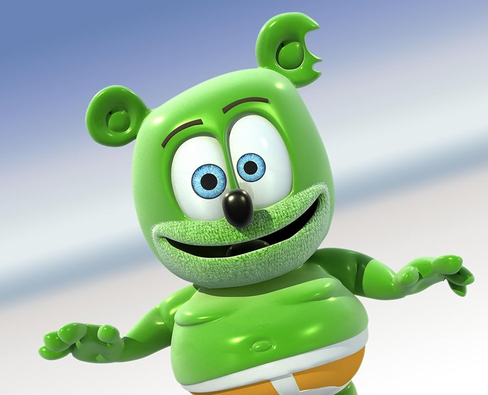

Gummy Bear
Riegel e seu irmão, Paul, criaram o ursinho de goma após a II Guerra Mundial,
quando herdaram uma pequena fábrica de doces que pertencera a seu pai, também
chamado Hans. O nome da empresa, Haribo, é uma junção da primeira sílaba do nome
de seu criador, Hans Riegel, e da cidade de Bonn. A Haribo fabrica, além dos
ursinhos de goma que ficaram mundialmente famosos, garrafinhas e outras espécies
de bala de goma. O "Gummy Bear" é o primeiro produto de origem alemã que muitas
pessoas compram.
- criado pelo Riegel e seu irmão Paul na 2 Guerra Mundial
- o significado do nome é ursinho de goma
- quem faz sua voz é Manolo Rey
